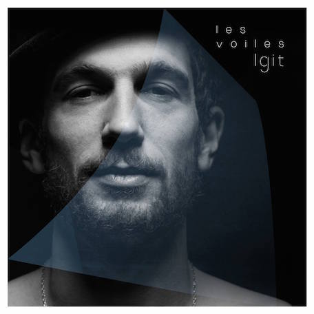

Les Voiles, nouvel EP en pré-commande le 23/02/15!
 Concert à la Maroquinerie (Paris) le 17 mars!Concerts à venir
BandsintownEP "Like Angels Do" - 2013
Trio
- Antoine Barrau a.k.a Igit: chant / guitares / lap steel
- Hugo Zanghi: contrebasse / basse / theremin
- Paul Amboise: batterie / percussions
Playlist de vidéos
Pros
Contacts
- Tour (booking): Samuel Capus - Bleu Citron
- Management: Martin Toloton - Moonkeys Music
- Musiciens: igitcontact@gmail.com